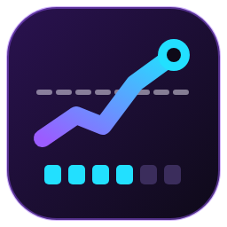

OFFLINE
Nessuna diretta in corso
In attesa di dati da Twitch
075
UTENTI IN LIVE / OBIETTIVO
MEDIA DELLA DIRETTA
0
- In onda da
- 0 min
- Picco
- 0
- Follower
- 0
- In lurk sul sito
- 0

In attesa di dati da Twitch
075
UTENTI IN LIVE / OBIETTIVO
MEDIA DELLA DIRETTA
0
Servono 6 dirette in giorni diversi con media di almeno 75 spettatori in entrambi i periodi.
Non ancora letto
Premi Aggiorna per leggere il Percorso verso il Partner dalla Dashboard Creator.
Il conteggio dell'app è una stima. Fa fede la Dashboard Creator di Twitch, sezione Obiettivi.
I valori ufficiali di Twitch sono 75 di media, 6 dirette, 30 giorni. Cambiali solo per provare.
Le dirette restano solo su questo computer. Puoi esportarle in un file CSV da aprire con Excel.
Segue il percorso verso il Twitch Partner: 6 dirette con almeno 75 spettatori di media, negli ultimi 30 giorni e nei 30 prima. Bastano tre passi.
Twitch chiede un codice dell'app, gratuito, che crei una volta sola. Ci vogliono due minuti.
Ti diamo un codice: lo confermi su twitch.tv dal browser e l'app si collega da sola. Nessuna password passa da qui.
IL TUO CODICE
In attesa della conferma
Partner Monitor ora segue il canale. Puoi chiudere la finestra: resta attivo accanto all'orologio e ti avvisa quando una diretta inizia a contare.